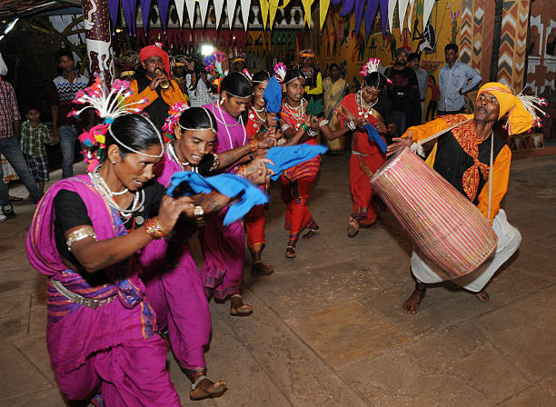

ABOUT

his museum is literally a home that is well preserving the state's rich art and culture bestowed in various tribes. The folklores, lifestyle, rituals and social customs of all seven indigenous tribes of MP?the Gonds, Bhils, Bharias, Sahariya, Korku, Kol, and Baiga are showcased in the museum through a repository of traditional art. In fact, lives of the region's seven tribes are being celebrated here via their craft. The moment you step into the galleries inside the museum, you get a strong feel about not just witnessing the galleries but a strong feeling of entering straight into the lifestyles of the tribes of Madhya Pradesh.